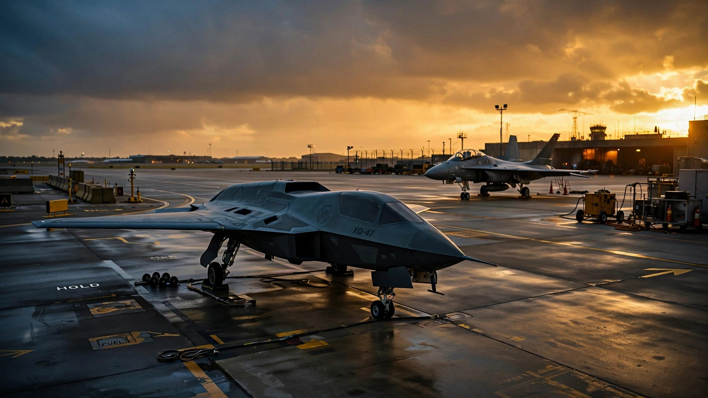

The Air Force Just Ordered 1,000 Robot Fighter Jets. It’s Buying Their Brains Separately.
On June 17, the U.S. Air Force awarded production contracts for two autonomous drone wingmen—General Atomics’ FQ-42A Dark Merlin and Anduril’s FQ-44A Fury—four months ahead of schedule, with nearly $1 billion in FY2027 procurement and $9.5 billion planned over five years. The bigger story isn’t the drones. It’s the procurement model: the Pentagon is decoupling autonomy software from airframes and buying AI brains from a competitive pool of six vendors, paying only for combat performance. They call it “software sold separately.”

Fifteen months. That is how long it took General Atomics to go from contract award to first flight of the YFQ-42A Dark Merlin, one of two autonomous combat drones the Air Force just ordered into production. For context, the F-35 Joint Strike Fighter program began in 1996 and did not achieve initial operational capability until 2015—nineteen years, with the F-22 taking even longer. What changed is not the airframe engineering; it is the entire acquisition philosophy, and the most radical part of it has nothing to do with drones at all.
On June 17, 2026, the Air Force announced production contracts for both the FQ-42A Dark Merlin from General Atomics Aeronautical Systems and the FQ-44A Fury from Anduril Industries, four months ahead of the scheduled decision point. The service plans to procure over 150 of these Collaborative Combat Aircraft by the end of the decade and approximately 1,000 total through the mid-2030s, at a target cost of roughly $30 million per airframe. The FY2027 budget requests nearly $1 billion to begin procurement, with more than $9.5 billion allocated over five years.
Those numbers are large but unremarkable by Pentagon standards. The real story is buried in a single phrase from the Air Force press release: “software sold separately.”
Two Drones, Very Different Animals
The Air Force chose both designs instead of picking a winner, a deliberate strategy to maintain “continuous competition” and hedge manufacturing risk. The two aircraft are built for the same mission—flying alongside manned fighters like the F-35, F-22, and the forthcoming Next Generation Air Dominance platform to carry additional weapons into contested airspace—but they approach that mission differently.
| FQ-42A Dark Merlin | FQ-44A Fury | |
|---|---|---|
| Manufacturer | General Atomics (GA-ASI) | Anduril Industries |
| Lineage | XQ-67A Off-Board Sensing Station | Blue Force Technologies (acquired 2023) |
| Size | Larger (~half an F-16) | Smaller (~20 ft length, 17 ft wingspan) |
| Weapons bay | Internal | External (underwing hardpoints) |
| Armament | 2× AIM-120 AMRAAM | 2× AIM-120 AMRAAM |
| Engine | Single turbofan | Williams FJ44-4M (4,000 lbf) |
| Performance | Details classified | Mach 0.95, 50,000 ft ceiling, 9g |
| First flight | August 2025 | October 2025 |
| Notable | Crashed Apr 6, 2026 (autopilot error); resumed May 21 | Captive carry of AIM-120 demonstrated Feb 2026 |
The internal weapons bay on Dark Merlin suggests General Atomics is optimizing for stealth; external stores increase radar cross-section. Fury’s external hardpoints sacrifice some stealth for simplicity, modularity, and the ability to carry payloads up to 400 pounds including AESA radars, infrared sensors, and electronic warfare suites. Both carry the same missile, but they solve the physics differently.
Dark Merlin crashed on April 6, 2026, a total loss caused by an autopilot miscalculation of aircraft weight and center of gravity. Testing resumed on May 21. The Air Force awarded the production contract anyway, less than a month later. That speed of decision-making would have been inconceivable in earlier fighter programs, where a test mishap typically triggered years of review.
The Real Revolution: An App Store for Fighter Jet Brains
Here is what makes this program structurally different from every major weapons acquisition since the B-2 Spirit in the 1980s. The Air Force is deliberately decoupling the purchase of autonomy software from the airframes that fly it. Six vendors form a competitive pool for what the service calls “mission autonomy”: Anduril (Lattice), General Atomics, Lockheed Martin, Northrop Grumman, RTX’s Collins Aerospace, and Shield AI (Hivemind). Hardware contracts go to two companies. Software contracts go to six. The brain and the body are bought separately.
This is not how defense procurement works, and it has not been since the industry consolidated in the 1990s. Traditionally, the prime contractor that builds the airframe also writes the flight software, controls the intellectual property, and locks the government into decades of single-source sustainment. That model produced the F-35’s Autonomic Logistics Information System, a Lockheed-owned software ecosystem so proprietary that the Pentagon has spent years and billions trying to gain full access to its own aircraft’s data. Under CCA, the government owns the architecture and vendors compete to fill it.
“By treating mission autonomy as ‘software sold separately,’ the Air Force ensures that the warfighter receives state-of-the-art physical platforms alongside agile, easily updatable software, effectively breaking traditional procurement molds,” the Air Force said in its press release.
The compensation structure goes even further. The software contracts use what the Air Force calls a “first-of-its-kind award fee exposure strategy”: operator feedback and combat performance determine what the Air Force pays for mission autonomy. The vendor only collects the full licensing fee if the software delivers combat capability that warfighters validate. This is performance-based contracting applied to AI, where the product’s value is measured by whether a pilot trusts it enough to delegate targeting decisions at Mach 0.95.
The licensing model allows the Air Force to award software to any of the six vendors at any point over the next six years and to swap providers as technology evolves. Think of it as a six-year rolling competition where the best autonomy stack wins the next contract period, while the airframes fly regardless of whose brain is running them. All vendors must comply with the government-owned Autonomy Government Reference Architecture (A-GRA), ensuring any software can run on any CCA airframe.
The Force Multiplication Math
The Air Force’s notional plan calls for each manned fighter to command two CCAs, though testing suggests one pilot can effectively manage three to five. Run the arithmetic on the service’s announced totals. The Air Force currently operates roughly 300 F-35As and 183 F-22s. If each of those fighters commands two CCAs, 1,000 drone wingmen add roughly 2,000 additional AIM-120 missiles to the force structure without training a single new pilot, building a single new cockpit, or subjecting a single additional human to a double-digit-g turn in a surface-to-air missile engagement zone.
The pilot shortage makes this arithmetic existential rather than aspirational. The Air Force has been roughly 2,000 pilots short of its requirement for years, a deficit driven by training timelines (over two years to produce a fighter pilot), airline hiring (which offers double the military’s pay), and the irreducible limit that human bodies impose on sortie rates. A CCA can fly back-to-back missions without crew rest and can be forward-deployed to austere bases that lack the life-support infrastructure pilots require. At $30 million per copy versus $82.5 million for an F-35A, you can lose three CCAs and still come out ahead on cost—and nobody writes a condolence letter.
That calculus is why Air Force Chief of Staff Gen. Ken Wilsbach called CCAs the platform that will “change how we project power and generate mass in highly contested environments.” The contested environment in question is the Western Pacific, where China’s layered air defense network—the world’s densest—makes manned penetration missions a problem with increasingly unfavorable odds.
What This Doesn’t Prove
Neither drone has completed a live weapons release. Captive carry tests with inert AIM-120s have been conducted on the Fury, validating structural integrity and aerodynamic performance with external stores, but separation testing and live fire remain ahead. The Dark Merlin’s weapons integration timeline has not been publicly disclosed.
The autonomy software that makes the CCA concept work—the part where one pilot delegates targeting and threat assessment to robot wingmen moving at near-sonic speeds in an environment saturated with electronic warfare—has been demonstrated in controlled flight tests but never in operational conditions against a peer adversary. Shield AI’s Hivemind and Anduril’s Lattice have both flown on multiple platforms, but the gap between “autonomy works in a test range” and “autonomy works when China is jamming everything” is not a gap anyone has bridged.
Maintenance doctrine does not exist yet. The Air Force has not decided who will maintain CCAs, where they will be based beyond the initial assignment to Beale Air Force Base in California, or how they integrate into existing fighter squadron structures. Those operational questions are not academic details. They determine whether 1,000 drone wingmen become a deployable fighting force or a fleet of expensive hangar queens that nobody trained to fix.
The strongest counterargument against the CCA program’s ambitions is the Pentagon’s own track record. Wargames conducted by the Mitchell Institute for Aerospace Studies found that a high-end CCA—the kind that approaches an F-35 in sophistication—was less useful in a Pacific campaign than a larger number of less-sophisticated autonomous drones. That finding led the Air Force to pivot toward volume over capability for Increment 1, but it raises a harder question: if mass matters more than individual capability, should the $30 million CCA even be the primary investment, or should the Air Force be buying thousands of $2 million attritable drones instead? Kratos’s MQ-58 Valkyrie, which the Marines plan to field by 2029, costs a fraction of a CCA and is explicitly designed to be lost. The history of military aviation suggests that whatever is cheap enough to scale wins.
Increment 2 and the Expanding Ecosystem
The CCA program is designed to grow. Increment 2, with requirements still to be finalized, already has nine vendors under development contracts. Northrop Grumman’s YFQ-48A Talon Blue, which self-funded its own development after losing the Increment 1 competition, is 1,000 pounds lighter, uses 50% fewer parts, and can be built 30% faster than Northrop’s original proposal. Boeing’s MQ-28 Ghost Bat, originally developed for Australia, has an expanding U.S. presence. The Navy and Marine Corps are developing their own CCA fleets in close coordination with the Air Force.
But the most consequential expansion may not be in airframes at all. Shield AI’s Hivemind software was just selected to provide swarming capabilities for the Pentagon’s Low-Cost Uncrewed Combat Attack System (LUCAS) kamikaze drones. Anduril’s Lattice is A-GRA compliant across the full spectrum of current and future autonomous aircraft. The autonomy software being developed for CCAs will not stay on CCAs. It will migrate to every unmanned platform in the joint force, from submarine-launched reconnaissance drones to ground-based logistics robots. The “software sold separately” model does not just change how the Air Force buys fighter jets. It creates the infrastructure for a military-wide autonomy marketplace.
The Bottom Line
The Air Force is building the first fleet of autonomous combat jets designed to fight alongside human pilots, and it is doing it faster than anyone expected—contracts awarded four months early, first flights within 15 months of selection, production orders placed one month after a prototype crash. But the airframes are the easier problem. The unprecedented part is the procurement architecture: a deliberate split between hardware and software vendors, a performance-based licensing model that pays AI companies only for combat results, and a government-owned reference architecture that ensures no single contractor owns the keys. If it works, it will be studied by every allied military on Earth. If it fails, it will fail because the autonomy was not ready—and the modular architecture means the Air Force can swap in a better brain without replacing a single wing.
If you work in defense acquisition, study the A-GRA. It is the architectural standard that makes vendor swapping possible, and it will become the de facto interface specification for every autonomous military platform in the NATO ecosystem. If you are a software engineer, understand that the six companies competing for CCA autonomy contracts are building the first combat-certified AI systems with performance-based compensation; the technical and ethical standards they establish will define the field for decades. If you are a taxpayer, know that the CCA program’s $9.5 billion five-year budget is roughly what the F-35 program spends every 18 months in sustainment costs alone. The question is not whether autonomous wingmen are expensive. The question is whether the alternative—sending pilots into contested airspace without them—is affordable.